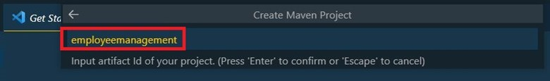
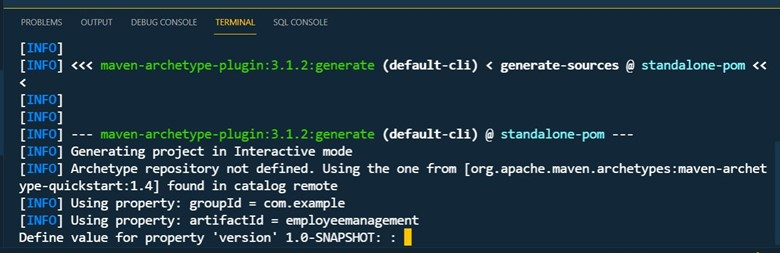
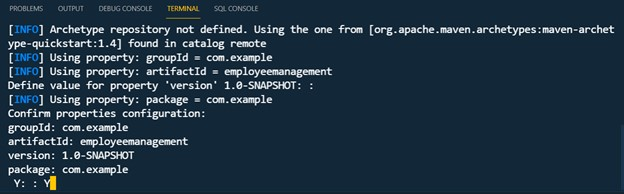
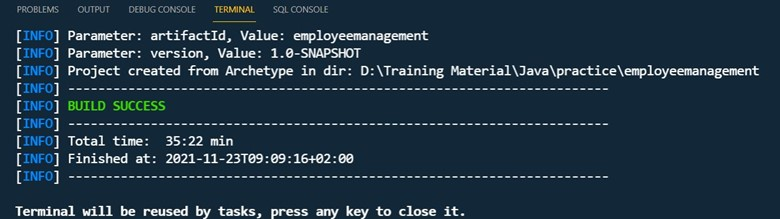
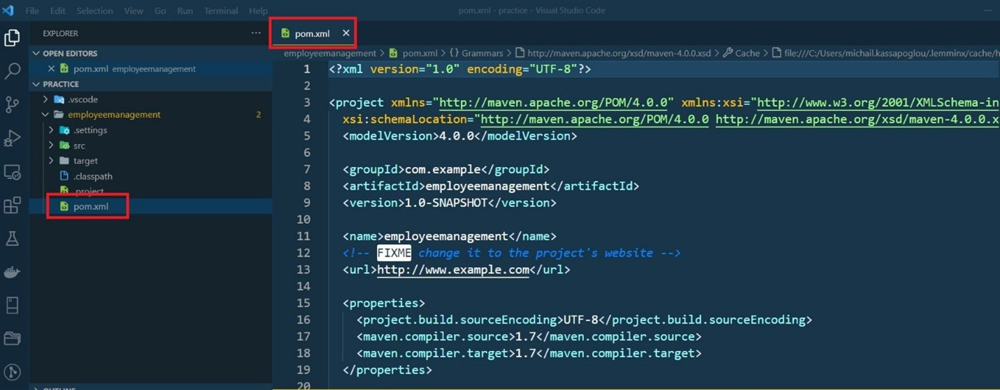
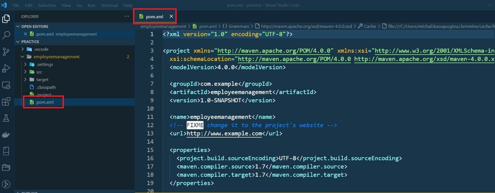
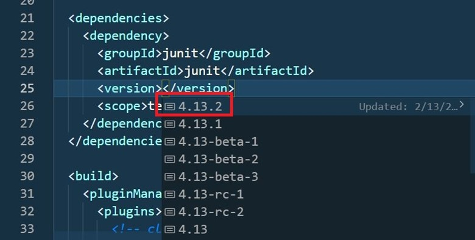

ΕΝΟΤΗΤΑ 2 JAVA SE - MAVEN AND INTELLIJ INSTALLATION
Στο σημερινό δωρεάν μάθημα Java θα εγκαταστήσουμε τα εργαλεία που είναι απαραίτητα για την δημιουργία και την εκτέλεση Java κώδικα. Επίσης, θα γράψουμε το πρώτο μας Hello World Java πρόγραμμα και θα εξηγήσουμε τα βήματα δημιουργίας του μέσα από το IDE που έχουμε επιλέξει.
Στην προηγούμενη ενότητα είχαμε την ευκαιρία να δούμε τα βήματα εγκατάστασης της Java. Θεωρώντας λοιπόν ότι η Java είναι ήδη εγκαταστημένη στον υπολογιστή σας, προχωράμε στην επόμενη εγκατάσταση που είναι το maven.
Το Apache Maven είναι ένα ανοιχτού-κώδικα project που έχει ένα δομημένο και απλό τρόπο να δημιουργεί, να διαχειρίζεται και να τεστάρει java projects. Παρέχει όμως και άλλες δυνατότητες όπως εύκολη διαχείριση των βιβλιοθηκών στις οποίες στηρίζεται το project αλλά και εύκολη συμβατότητα και επικοινωνία με προϊόντα όπως Jenkins και Bamboo. Ας δούμε λοιπόν τα βήματα που πρέπει να ακολουθήσουμε για να εγκαταστήσουμε επιτυχώς το Apache Maven.
Για αρχή, θα πρέπει να κατεβάσουμε και να αποσυμπιέσουμε το Apache Maven. Πηγαίνουμε στο site του Apache Maven (https://maven.apache.org/download.cgi) και κατεβάζουμε την τελευταία έκδοση η οποία είναι η 3.6.3.
Αφού κατεβάσουμε το αρχείο, το κάνουμε unzip μέσα στο folder ή directory που επιθυμούμε. Για να μπορέσουμε όμως να καλέσουμε το Maven σε ένα cmd terminal από οποιοδήποτε path και αν βρισκόμαστε, θα πρέπει να το δηλώσουμε και αυτό (όπως κάναμε και με την Java) στα System Variables των Windows 10. Δηλώνουμε λοιπόν μια καινούργια μεταβλητή με το όνομα M2_HOME η οποία θα έχει σαν τιμή το path στο οποίο βρίσκεται το unzip αρχείο του Maven.

Τώρα θα πρέπει να δηλώσουμε στα Windows 10 την τοποθεσία του εκτελέσιμου αρχείου του Maven. Οπότε επιλέγουμε πάλι την μεταβλητή Path, πατάμε Edit και προσθέτουμε την M2_HOME μεταβλητή μαζί με τον bin φάκελο του Maven. Πατήστε ΟΚ όταν τελειώσετε την διαδικασία.

Αν λοιπόν ανοίξουμε ένα cmd terminal και εκτελέσουμε την εντολή mvn -v θα πρέπει να πάρουμε πίσω το εξής αποτέλεσμα:

Τώρα θα πρέπει να εγκαταστήσουμε ένα IDE. Στα δικά μας δωρεάν μαθήματα Java θα χρησιμοποιήσουμε το Community Edition (δωρεάν) του IntelliJ IDEA που μπορείτε να κατεβάσετε από εδώ: (https://www.jetbrains.com/idea/download/#section=windows) .

Αφού το εγκαταστήσετε, ξεκινήστε το για να πάμε στις επιλογές του. Ίσως χρειαστεί να δημιουργήσετε ένα πρόχειρο Java project για να σας αφήσει να προχωρήσετε. Δημιουργείστε ένα java project δίνοντας ότι όνομα θέλετε. Όταν το περιβάλλον του IntelliJ είναι έτοιμο, πηγαίνουμε File → Settings → Build, Execution, Deployment → Build Tools → Maven και αλλάζουμε το Maven Home Directory σε αυτό που έχουμε ήδη εγκαταστήσει. Δεν χρειάζεται να το ξαναγράψετε, θα είναι έτοιμη η επιλογή για να την επιλέξετε.

Πατήστε Apply και μετά ΟΚ για να ολοκληρώσετε την διαδικασία.
Τώρα, είμαστε σε θέση να δημιουργήσουμε το πρώτο μας Java Maven Project μέσα από το περιβάλλον του IntelliJ. Θα μπορούσαμε φυσικά να δείξουμε όλα τα βήματα και χωρίς την χρήση κάποιου περιβάλλοντος, απλά χρησιμοποιώντας το command prompt, αλλά αυτό δεν είναι απαραίτητο. Όλα τα σημερινά IDE (IntelliJ, Eclipse, NetBeans, ακόμα και το Visual Studio Code) έχουν τις επιλογές του Maven ενσωματωμένες και μπορούμε εύκολα να τις δούμε και φυσικά να τις εκτελέσουμε με ένα κλικ επάνω στο μενού που εμφανίζουν.
Ξεκινάμε λοιπόν το IntelliJ και πηγαίνουμε File → New → Project → Maven.
Στο παράθυρο που εμφανίζεται λογικά θα πρέπει να είναι προεπιλεγμένη η έκδοση 11 της Java. Αν όχι, επειδή ίσως έχετε και άλλες εκδόσεις εγκατεστημένες στον υπολογιστή σας, απλά πατήστε το βελάκι (δίπλα από την έκδοση της Java) να την επιλέξετε από τις επιλογές που θα εμφανιστούν ή πατήστε το κουμπί NEW να ορίσετε τον φάκελο στον οποίο έχει εγκατασταθεί η Java 11 (συνήθως είναι το Program Files στα Windows 10). Δεν επιλέγουμε το “Create from archetype”. Πατάμε NEXT για να συνεχίσουμε στο επόμενο βήμα.

Στο επόμενο παράθυρο, ορίζουμε τα στοιχεία της εφαρμογής μας, όπως:
Name : Αυτό είναι το όνομα του project όπως το ορίζει το IntelliJ.
ArtifactId : Αυτό είναι το όνομα του project όπως χρειάζεται να οριστεί στο Maven. Βασικά, την ώρα που γράφετε το όνομα του project αλλάξει ταυτόχρονα και το ArtifactId οπότε δεν χρειάζεται να ξαναγράψετε το όνομα της εφαρμογής δεύτερη φορά.
Location: Εδώ επιλέγετε σε ποιο φάκελο θέλετε να αποθηκευτεί η εφαρμογή σας.
GroupId: Αυτό είναι το όνομα του οργανισμού ή εταιρείας η οποία δημιουργεί την εφαρμογή, πχ. org.springframework. Βασικά ακολουθούμε την ίδια λογική και στην ονομασία των java πακέτων.
Version: Για να μπορέσουμε να παρακολουθήσουμε τις εκδόσεις τις οποίες δημιουργούμε, δίνουμε ένα αριθμό στην έκδοση του προγράμματος που δημιουργούμε. Συνήθως την πρώτη φορά η έκδοση είναι 1.0 και έχουν την ετικέτα SNAPSHOT επειδή ακόμα είναι σε εξέλιξη και ο κώδικας δεν είναι ολοκληρωμένος.
Αν έχετε δώσει κάποια δικά σας ονόματα στις πιο πάνω επιλογές, απλά πατήστε FINISH τώρα να δημιουργηθεί το project. Η πιο κάτω εικόνα σας δείχνει ένα παράδειγμα από τις δικές μου επιλογές.

Λογικά θα πρέπει να έχει δημιουργηθεί το παρακάτω project στο IntelliJ.

Αν και έχουμε επιλέξει να ενσωματώσουμε το Maven στο IntelliJ υπάρχει μια πιθανότητα να προσπαθήσει το IDE να χρησιμοποιήσει τη δική του ενσωματωμένη έκδοση του Maven. Για αυτό το λόγο ας κάνουμε έναν έλεγχο ακόμα να βεβαιωθούμε ότι πραγματικά χρησιμοποιεί την έκδοση που εμείς εγκαταστήσαμε.
Πηγαίνουμε στο File → Settings → Build, Execution, Deployment → Build Tools → Maven και ελέγξτε το Maven home directory. Βεβαιωθείτε ότι δείχνει στην δική σας Maven εγκατάσταση και όχι στην ενσωματωμένη έκδοση του IntelliJ.

Το Maven project που μόλις έχουμε δημιουργήσει ορίζεται από ένα αρχείο που ονομάζεται POM.xml. Μέσα σε αυτό το αρχείο, βασικά θα βρούμε (ή θα προσθέσουμε εμείς) όλες τις απαραίτητες πληροφορίες που χρειάζεται το project μας για να δημιουργηθεί συμπεριλαμβανομένων και των εκτός java βιβλιοθηκών.
Κάνουμε λοιπόν διπλό κλικ επάνω στο pom.xml για να δούμε τις πληροφορίες που περιέχει.
POM.xml
<?xml version="1.0" encoding="UTF-8"?> <project xmlns="http://maven.apache.org/POM/4.0.0" xmlns:xsi="http://www.w3.org/2001/XMLSchema-instance" xsi:schemaLocation="http://maven.apache.org/POM/4.0.0 http://maven.apache.org/xsd/maven-4.0.0.xsd"> <modelVersion>4.0.0</modelVersion> <groupId>org.example</groupId> <artifactId>HelloWorld</artifactId> <version>1.0-SNAPSHOT</version> </project>
Το pom.xml ορίζεται από το project element () το οποίο ορίζει και το xml schema επάνω στο οποίο θα στηριχτεί η δομή του pom.xml (xsi:schemaLocation). Αυτό σημαίνει ότι όλα τα XML tags που θα γράψουμε μέσα στο POM.xml πρέπει να είναι δομημένα σωστά - συντακτικά και με την σωστή σειρά.
Αμέσως μετά ακολουθούν οι επιλογές μας όπως τις είχαμε γράψει στην δημιουργία του project. Όμως ακόμα δεν είμαστε σε θέση να γράψουμε και να τρέξουμε Java κώδικα, γιατί δεν έχουμε ορίσει την έκδοση της Java που θα χρησιμοποιηθεί στο project μας. Πρέπει λοιπόν να προσθέσουμε τις πιο κάτω γραμμές στο pom.xml αμέσως μετά από το version.
POM.xml
<?xml version="1.0" encoding="UTF-8"?> <project xmlns="http://maven.apache.org/POM/4.0.0" xmlns:xsi="http://www.w3.org/2001/XMLSchema-instance" xsi:schemaLocation="http://maven.apache.org/POM/4.0.0 http://maven.apache.org/xsd/maven-4.0.0.xsd"> <modelVersion>4.0.0</modelVersion> <groupId>org.example</groupId> <artifactId>HelloWorld</artifactId> <version>1.0-SNAPSHOT</version> <properties> <maven.compiler.target>11</maven.compiler.target> <maven.compiler.source>11</maven.compiler.source> </properties> </project>
Γιατί ορίσαμε το target και το source στο project μας εφόσον μόνο η Java 11 είναι διαθέσιμη στον υπολογιστή μας? Ο κύριος λόγος είναι γιατί απαιτείται εφόσον χρησιμοποιούμε έκδοση της Java που είναι μεγαλύτερη από την έκδοση 10. Εάν δεν προσθέσουμε το target και source property στο section properties η διαδικασία του build δεν θα τρέξει. Προσθέτουμε λοιπόν το properties, όπως δείξαμε στο πιο πάνω παράδειγμα, με την επιθυμητή έκδοση της Java στο pom.xml αρχείο.
Τώρα το ερώτημα είναι – που γράφουμε τον java κώδικα? Μέσα σε ποιο πακέτο? Πριν απαντήσουμε αυτό το ερώτημα ας ανοίξουμε όλους τους φακέλους για να δούμε την ολική δομή του προγράμματος.
Έχουμε λοιπόν την εξής δομή:
src/main/java : Εδώ γράφουμε το κύριο μέρος του java κώδικα.
src/main/resources: Εδώ γράφουμε τα configuration αρχεία με ιδιότητες (properties) της εφαρμογής όπως για παράδειγμα το XML configuration αρχείο που χρειάζεται μια Spring εφαρμογή.
src/test/java : Εδώ γράφουμε Java Unit κώδικα για να δοκιμάσουμε εάν ο κώδικας μας προσφέρει το σωστό αποτέλεσμα.
Οπότε καταλαβαίνετε ότι ο δικός μας κώδικας θα γραφτεί μέσα στο src/main/java. Επίσης, επειδή επιθυμούμε οι κλάσεις μας (τα αρχεία της Java) να είναι οργανωμένα, συνηθίζεται να ονομάζουμε τα πακέτα με το όνομα της εταιρείας (ίδια λογική όπως το groupId). Ας δημιουργήσουμε λοιπόν ένα πακέτο com.mycompany στο src/main/java κάνοντας δεξί κλικ επάνω του και επιλέγοντας New → Package.
Στο εμφανιζόμενο μικρό παράθυρο, γράφουμε com.mycompany. Το αποτέλεσμα θα πρέπει να είναι όπως αυτό της πιο κάτω εικόνας.

Τώρα κάνουμε δεξί κλικ επάνω στο πακέτο που μόλις δημιουργήσαμε και επιλέγουμε New → Java Class. Ονομάζουμε την κλάση HelloWorld και πατάμε ENTER. Ας γράψουμε ένα απλό Java κώδικα που εμφανίζει το μήνυμα “Hello World” όταν εκτελεστεί.
 Ας ανακεφαλαιώσουμε το τι έχουμε δημιουργήσει μέχρι τώρα. Με την χρήση του IntelliJ έχουμε δημιουργήσει ένα Java Project. Ορίσαμε μέσα στο pom.xml ότι το Java Project θα χρησιμοποιήσει Java 11 και γράψαμε μια καινούργια κλάση μέσα στο πακέτο com.mycompany που δείχνει στην κονσόλα το μήνυμα Hello World.
Τώρα ήρθε η ώρα να ασχοληθούμε με τις εντολές του Maven. Για να μπορέσουμε να τις εκτελέσουμε θα πρέπει να πατήσουμε δεξιά στην οθόνη μας το Maven tab έτσι ώστε να ανοίξει. Έπειτα πατάμε το εικονίδιο m το οποίο έχει σαν περιγραφή Execute Maven Goal.
Στο παράθυρο που θα εμφανιστεί γράφουμε την εντολή mvn clean install. Την εντολή αυτή πρέπει να την εκτελούμε κάθε φορά που προσθέτουμε ή αφαιρούμε κώδικα από το πρόγραμμα μας. Η install εντολή θα δημιουργήσει ένα έξτρα φάκελλο στο project μας που ονομάζεται target. Εκεί είναι η εκτελέσιμη μορφή του προγράμματος μας πακεταρισμένη σε ένα jar αρχείο. Το clean καθαρίζει προηγούμενες δημιουργίες του target φακέλλου και έτσι ώστε όταν τρέξουμε πάλι την εντολή install να δημιουργηθεί ένα καινούργιο jar αρχείο που θα περιέχει όλες τις καινούργιες αλλαγές που έχουμε κάνει στον κώδικα.
 


Το project μας έχει δημιουργηθεί σωστά γιατί το αποτέλεσμα του build ήταν success. Τώρα δεν απομένει παρά να πάμε επάνω στο πράσινο τρίγωνο που εμφανίζεται δίπλα από την κλάση μας και αφού το πατήσουμε να επιλέξουμε την εντολή Run από το εμφανιζόμενο μενού.
Στο terminal θα εμφανιστεί το μήνυμα που είχαμε γράψει στον κώδικα μας.

Τώρα που γνωρίζουμε την διαδικασία πως να δημιουργούμε ένα απλό Java Maven Project μέχρι και την εκτέλεσή του, είμαστε έτοιμοι από την επόμενη ενότητα να αναλύσουμε γραμμή προς γραμμή τον java κώδικα που γράψαμε για να εμφανιστεί το Hello World στο terminal.